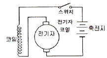
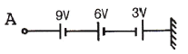

농기계정비기능사 (2012-10-20 기출문제)
1과목: 농기계정비
1. 기관의 실린더 헤드를 연삭하면 압축비는?
- 낮아진다.
- 높아진다.
- 변하지 않는다.
- 기관에 따라 커지는 것도 있고, 작아지는 것도 있다.
(정답률: 58%)

2. 트랙터에서 브레이크 페달을 밟아도 제동이 잘되지 않은 원인으로 틀린 것은?
- 페달 유격이 적을 때
- 디스크가 마멸 또는 소손되었을 때
- 브레이크 드럼과 라이닝 사이의 간격이 클 때
- 유압식 브레이크에서 유압호스에 공기가 유입되었을 때
(정답률: 73%)
3. 농기계기관에서 오일량의 점검시기를 가장 적당한 것은?
- 운전 전
- 난기 운전 후
- 운전 중
- 운전 종료 후
(정답률: 61%)
4. 동력경운기의 V벨트 장력이 너무 약할 때 일어나는 현상 중 맞는 것은?
- 점화시기가 빨라진다.
- 동력전달 효율이 떨어진다.
- 엔진 과열의 원인이 된다.
- 클러치 축 베어링을 손상시킨다.
(정답률: 81%)
5. 농약 살포기가 갖추어야 할 조건으로서 틀린 것은?
- 도달성과 부착율
- 불균일성과 분산성
- 피복면적비
- 노력의 절감과 살포능력
(정답률: 79%)
6. 동력분무기에서 약액의 압력을 일정하게 유지시키는 장치는?(오류 신고가 접수된 문제입니다. 반드시 정답과 해설을 확인하시기 바랍니다.)
- 압력조절밸브
- 공기실
- 감속기어장치
- 밸브와 밸브시트
(정답률: 74%)
7. 회전 구동력을 얻어서 경운 작업을 수행하는 동력경운기의 구동방식으로 가장 널리 이용되는 것은?
- 로터리식
- 크랭크식
- 스크루식
- 스로틀식
(정답률: 64%)
8. 트랙터 타이어의 호칭 치수가 “8.00-16-4PR”이다. 알맞게 표기한 것은?
- 타이어의 내경-타이어의 폭-플라이수
- 타이어의 폭-타이어의 외경-플라이수
- 타이어의 폭-림의 지름-플라이수
- 타이어의 외경-타이어의 내경-플라이수
(정답률: 64%)
9. 동기물림 기어식 변속기에 대한 설명 중 틀린 것은?
- 원추형 마찰 클러치를 이용한다.
- 동기 장치가 설치되어 있다.
- 고속 주행할 때 변속이 용이하다.
- 변속할 때 정지하여야 한다.
(정답률: 75%)
10. 다음 중 관리기 주요장치 중 해당이 없는 것은?
- 주클러치
- 변속장치
- 조향장치
- 제동장치
(정답률: 56%)
11. 캠축의 휨과 기어의 백래쉬를 측정하기에 가장 적당한 것은?
- 다이얼 게이지
- 버니어 캘리퍼스
- 마이크로미터
- 텔레스코핑 게이지
(정답률: 73%)
12. 기관의 크랭크 축 베어링 저널의 표준값이 58.00㎜, 측정한 결과 최대 마멸량이 57.755㎜일 때 수정(언더사이즈)값은?
- 57.75㎜
- 57.25㎜
- 57.50㎜
- 57.00㎜
(정답률: 63%)
13. 동력경운기의 조향클러치는 보통 어떠한 형식을 사용하고 있는가?
- 마찰 클러치
- 유체 클러치
- 전자 클러치
- 맞물림 클러치
(정답률: 79%)
14. 디젤엔진 분사 노즐에 대한 시험항목이 아닌 것은?
- 연료의 분사각도
- 연료의 분무상태
- 연료의 분사압력
- 연료의 분사량
(정답률: 47%)
15. 건조기를 1회 통과한 곡물을 밀폐된 용기에 일정시간 동안 저장하면 곡립 내부의 수분이 표면으로 확산되어 균형을 이루고 온도도 균일하게 되는 과정은?
- 노말라이징
- 템퍼링
- 평형 함수율
- 어넬링
(정답률: 48%)
16. 트랙터 작업기의 유압제어 장치와 관계없는 것은?
- 위치제어
- 견인력 제어
- 혼합제어
- 변속제어
(정답률: 56%)
17. 기관의 밸브 스프링 자유길이가 10㎜일 때 기울기(직각도)가 몇 ㎜ 이상이면 밸브 스프링을 교환해야 하는가?
- 30㎜
- 3㎜
- 0.3㎜
- 0.03㎜
(정답률: 50%)
18. 가솔린 기관의 노킹방지법이 아닌 것은?
- 압축비를 높게 한다.
- 옥탄가가 높은 연료를 사용한다.
- 흡기온도 및 실린더 벽 온도를 낮게 한다.
- 점화시기를 늦게 한다.
(정답률: 41%)
19. 기관의 압축 압력을 측정한 결과 측정값이 기준값보다 높을 때 원인으로 가장 타당한 것은?
- 밸브 개폐시기 불량
- 헤드가스켓의 파손
- 연소실의 카본 퇴적
- 실린더의 마모
(정답률: 75%)
20. 산파모 이앙기에서 한포기당 심어지는 모의 개수를 조절하는 것과 관계가 깊은 것은?
- 이앙기의 전진속도
- 플로트의 높낮이
- 모 탑재판의 횡이송 속도
- 식부침 작동 캠의 작동시기
(정답률: 53%)
2과목: 농기계전기
21. 동력경운기에서 브레이크 드럼은 변속기의 어느 축에 고정되어 있는가?
- 주변속 축
- 부변속 축
- 갈이구동 축
- PTO 축
(정답률: 51%)
22. 농용트랙터의 PTO(동력취출축)장치가 필요 없는 작업은?
- 플라우작업
- 로터리작업
- 퇴비살포작업
- 베일러작업
(정답률: 58%)
23. 트랙터 엔진에서 냉각장치인 라디에이터 코어 막힘율은 몇% 이상일 때 정비해야 하는가?
- 10%
- 20%
- 30%
- 50%
(정답률: 61%)
24. 고속 디젤기관의 열역학적 사이클은?
- 정압 사이클
- 복합 사이클
- 정적 사이클
- 오토 사이클
(정답률: 60%)
25. 동력경운기 부품 중 변속기 내부에 설치되어 있지 않는 것은?
- PTO축
- 조향 포크
- 조향 클러치
- 조향 클러치 레버
(정답률: 48%)
26. 브레이크 드럼의 지름이 400㎜이고, 드럼에 작용하는 힘이 150kgf인 경우 드럼에 작용하는 토크는? (단, 마찰계수는 0.2이다.)
- 6kgf·m
- 12kgf·m
- 60kgf·m
- 120kgf·m
(정답률: 31%)
27. 4사이클 기관이 1사이클을 마치려면 크랭크축은 몇 회전해야 하는가?
- 1회전
- 2회전
- 4회전
- 6회전
(정답률: 74%)
28. 자탈형 콤바인의 전처리부에 해당되지 않은 장치는?
- 곡립처리장치
- 디바인더
- 픽업장치
- 가이드 바
(정답률: 41%)
29. 로터리의 경운날 종류가 아닌 것은?
- 보통날
- 작두형 날
- L형 날
- A형 날
(정답률: 73%)
30. 경운기 시동 시 감압 레버를 당겨주는 이유로 가장 적합한 것은?
- 연료 펌프의 압력을 낮추어 연료 분사가 되지 않도록 하기 위해
- 압축 시 연소실 내의 압력을 낮추어 기관의 회전을 쉽게하기 위해
- 급기 공기압을 낮추어 조기 착화를 방지하기 위해
- 시동 시 이상 폭발에 의해 실린더 내의 압력 이 과도하게 상승하는 것을 방지하기 위해
(정답률: 59%)
31. 4극 3상 유도전동기의 실제 회전수가 1710[rpm]이었다. 이때의 슬립은?
- 5[%]
- 7[%]
- 9[%]
- 12[%]
(정답률: 37%)
32. 납축전지에 대한 설명 중 옳은 것은?
- 양극 터미널보다 음극터미널이 크다.
- 극판수는 음극판 보다 양극판 수가 많다.
- 전해액의 비중은 20℃일 때 1.80~2.04이다.
- 축전지를 오래 동안 방전 상태로 두면 극판이 영구 황산납으로 된다.
(정답률: 74%)
33. 다음 중 축전지에서 비중이 얼마 이하이면 보충전을 하고 충전장치에 대해 점검할 필요가 있는가?
- 1,200 이하
- 1,240 이하
- 1,260 이하
- 1,280 이하
(정답률: 55%)
34. 병렬회로에서 저항값을 알 수 없을 때, 전압을 무엇으로 나누면 분기회로의 저항을 구할 수 있는가?
- 분기회로의 전류
- 분기회로의 컨덕턴스
- 분기회로의 전압강하
- 전력
(정답률: 60%)
35. 다음 중 변압기의 원리에 적용되는 법칙은?
- 옴의 법칙
- 전자유도의 법칙
- 줄의 법칙
- 앙페르의 법칙
(정답률: 34%)
36. 1[A]의 전류를 흐르게 하는데 2[V]의 전압이 필요하다. 이 도체의 저항은?
- 4[Ω]
- 3[Ω]
- 2[Ω]
- 1[Ω]
(정답률: 67%)
37. 2[kg·m]의 토크로 매분 2000회 전하는 기동전동기의 출력은?
- 약 0.25[kW]
- 약 2.⑤[kW]
- 약 3.66[kW]
- 약 4.11[kW]
(정답률: 36%)
38. 단속기 접점에 관한 설명이다. 틀린 것은?
- 접점 간극이 좁으면 점화시기가 빨라진다.
- 접점의 재질은 백금이나 텅스텐강이 적합하다.
- 접점이 개폐될 때 오존(O3)가스가 발생한다.
- 접점 간극을 측정하는 계기는 피일러 게이지이다.
(정답률: 44%)
39. 내연 기관의 전기점화 방식에서 불꽃을 일으키는 1차 유도 전류를 일시적으로 흡수 저장하는 역할을 하는 것은?
- 진각장치
- 단속기
- 배전자
- 콘덴스
(정답률: 57%)
40. 농업기계 기동전동기에 주로 사용되는 전동기의 종류는?

- 교류식 정유자전동기
- 분권식 직류전동기
- 직권식 직류전동기
- 복권식 직류전동기
(정답률: 71%)
3과목: 농기계안전관리
41. 다음 중 전기 관련 단위로 옳지 않은 것은?
- 전류 : [A]
- 저항 : [Ω]
- 전력량 : [W]
- 무효전력 : [Var]
(정답률: 67%)
42. 0.02[A]는 몇 [μA]인가?
- 2×10-4[μA]
- 2×104[μA]
- 2×10-6[μA]
- 2×108[μA]
(정답률: 43%)
43. 농기계의 AC 발전기의 다이오드에 관한 내용으로 틀린 것은?
- 교류를 정류한다.
- 역류를 방지한다.
- 발전전압을 승압시킨다.
- 3상 AC 발전기의 다이오드는 보통 6개이다.
(정답률: 65%)
44. 납축전지의 충·방전 작용에 해당되는 것은?
- 자기작용
- 화학작용
- 물리작용
- 확산작용
(정답률: 88%)
45. 그림의 전지 접속에서 A점의 전위는?

- 9[V]
- 12[V]
- 15[V]
- 18[V]
(정답률: 50%)
46. 일반적으로 가스용접 시 아세틸렌 용접기에서 사용하는 아세틸렌 고무호스의 색깔은?
- 백색
- 적색
- 노란색
- 청색
(정답률: 50%)
47. 연삭기를 사용할 때 안전사항이 아닌 것은?
- 연삭숫돌은 설 치전에 가볍게 두드려 균열여부를 점검할 것
- 연삭숫돌은 축에 끼울 때 강제로 압인하지 말 것
- 소형 숫돌은 측압에 약하므로 측면사용을 금지할 것
- 공작물과 받침대 간격은 5mm 이상으로 유지할 것
(정답률: 61%)
48. 안전작업이 필요한 이유에 해당되지 않는 것은?
- 인명 피해를 예방할 수 있다.
- 생산품 불량이 감소될 수 있다.
- 산업설비의 손실을 감소할 수 있다.
- 생산재의 손실이 증가할 수 있다.
(정답률: 67%)
49. 재해의 원인별 분류에서 인적 원인에 해당되는 것은?
- 빈약한 정비
- 작업장소의 밀집
- 부적당한 속도로 장치를 운전
- 지나친 소음
(정답률: 77%)
50. 하인리히의 사고예방원리 5단계 중 1단계는 무엇인가?
- 안전관리조직
- 평가분석
- 시정책의 선정
- 시정책의 적용
(정답률: 71%)
51. 납산축전지 충전 중 화기를 가까이 하면 축전지가 폭발할 위험이 있는데 무엇 때문인가?
- 황산
- 수증기
- 산소
- 수소
(정답률: 65%)
52. 아크 용접기의 감전 방지를 위해 사용되는 장치는?
- 중성점 접지
- 2차 권선 방지기
- 리미트 스위치
- 전격방지기
(정답률: 47%)
53. 각종 농기계의 도로 주행 시 유의사항으로 틀린 것은?
- 트랙터로 도로 주행 시는 좌우 브레이크를 연결한다.
- 이앙기는 농로면이 나쁜 곳에서는 차량을 이용하여 운반 한다.
- 콤바인으로 도로 주행 시 디바이더에 범퍼를 부착한다.
- 부득이하게 내리막길에서 동력경운기의 조향 클러치를 사용할 때에는 평지에서와 같이 사용한다.
(정답률: 85%)
54. 농업기계 안전점검의 종류에 속하지 않는 것은?
- 별도점검
- 정기점검
- 수시점검
- 특별점검
(정답률: 70%)
55. 정 작업 중 안전사항으로 틀린 것은?
- 정의 머리 부분에 기름이 묻지 않도록 한다.
- 정 잡은 손의 힘을 뺀다.
- 쪼아내기 작업은 방진안경을 착용한다.
- 열처리한 재료는 반드시 정으로 작업한다.
(정답률: 66%)
56. 농업기계의 안전사고 요인이 아닌 것은?
- 기계적 요소
- 환경적 요소
- 미적 요소
- 인적 요소
(정답률: 76%)
57. 드릴 작업의 안전수칙 중 올바르지 못한 것은?
- 안전을 위해서 장갑을 끼고 작업한다.
- 머리가 긴 사람은 안전모를 쓴다.
- 작업 중 쇳가루를 입으로 불어서는 안 된다.
- 공쟉물을 단단히 고정시켜 따라 돌지 않게 한다.
(정답률: 84%)
58. 안전관리자의 직무가 아닌 것은?
- 사업장 순회점검·지도 및 조치의 건의
- 안전교육 계획의 수립 및 실시
- 안전에 관한 전반적인 책임
- 산업재해발생의 원인 조사 및 대책수립
(정답률: 55%)
59. 보호구의 관리로 부적당한 것은?
- 서늘한 곳에 보관할 것
- 산, 기름 등에 넣어 변질을 막을 것
- 발열성 물질을 보관하는 주변에 두지 말 것
- 모래, 땀, 진흙 등으로 오염된 경우는 세척 후 말려서 보관할 것
(정답률: 89%)
60. 수공구사용 시 주의해야 할 사항이 아닌 것은?
- 손이나 공구에 기름을 바른 다음 작업할 것
- 주위환경에 주의해서 작업을 할 것
- 정 작업 시는 보안경을 쓸 것
- 강한 충격을 가하지 말 것
(정답률: 89%)